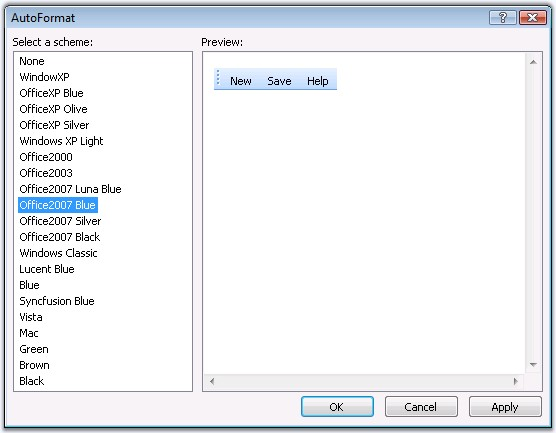
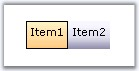
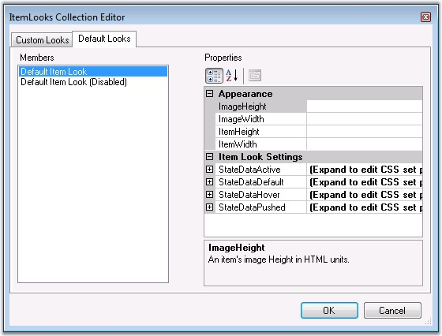
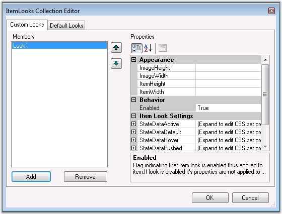
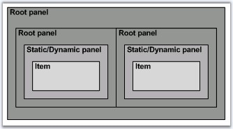
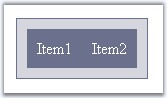
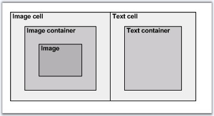

The look and feel of toolbar can be controlled by defining custom ItemLook instances in ItemLooks collection or by editing default ItemLook settings in DefaultItemLook and DefaultDisabledItemLook properties.
The topics discussed are given below.
The ToolBar control provides pre-defined set of styles that can be applied to your control just on a click of the button. You can set the desired look and feel for the control that includes some popular styles too.
The Autoformat window can be opened by right clicking the control and selecting the Auto Format... option opens the following Auto Format dialog box.

Figure 273: Autoformat Schemes
The left pane lists the various pre-defined style scheme that are available. The right pane shows the preview of the currently selected scheme. Select the required style and click OK to apply the selected scheme to the control.
Example of a popular look and feel
The following image shows the ToolBar with OfficeXP Silver style setting.

Figure 274
The new built-in format skins added for Toolbar are as follows.
· Vista
Figure 275
· MAC
Figure 276
· Blue
Figure 277
· Black
Figure 278
· Brown
Figure 279
· Green
Figure 280
The ItemLooks Collection Editor contains Default properties that allows to set default look and feel to the control and its disabled state, and Custom properties that allows you to customize the look and feel accordingly.
To override the default css settings or to apply custom looks, the CustomCSS property must be set to the style sheet where the styles are defined.
|
Property |
Description |
|
CustomCSS |
Specifies the external css file where the custom CSS classes are defined. |
The ItemLooks properties are as follows.
|
Property |
Description |
|
ImageHeight |
Specifies height of the image. |
|
ImageWidth |
Specifies width of the image. |
|
ItemHeight |
Specifies height of the toolbar item. |
|
ItemWidth |
Specifies width of the toolbar item. |
|
Enabled |
Specifies whether a look is enabled. |
|
StateActive |
Specifies the style classes to be applied to the toolbar items in active state. |
|
StateDefault |
Specifies the style classes to be applied to the toolbar items in default state. |
|
StateHover |
Specifies the style classes to be applied to the toolbar items in hover state. |
|
StatePushed |
Specifies the style classes to be applied to the toolbar items in pushed state. |
ID specifies the id of the look. The height and width of the image and the item can be set for the toolbar items.
The StateDefault, StateActive, StatePushed and StateHover properties in ItemLook contains the following css class properties that defines the styles for the toolbar items.
|
Property |
Description |
|
ImageCellCSSClass |
Specifies the css styles for the cell holding the leftimage. |
|
ImageContainerCSSClass |
Specifies the css styles for the container of the image. |
|
ImageCSSClass |
Specifies the css styles for the image of toolbar item. |
|
ItemCSSClass |
Specifies the css styles for toolbar items. |
|
ImageURL |
Specifies the url of the image that is to be displayed on a toolbar item. |
|
TextCellCSSClass |
Specifies the css styles for the cell holding the text. |
|
TextCSSClass |
Specifies the css styles for the text part of the toolbar item. |
The styles can be applied to individual items by setting the id of the look to the Look and LookDisabled property in the Designer dialog for the required menu items. This way the styles will be applied only to those items.
|
Property |
Description |
|
Look |
Specifies the styles for the toolbar items. |
|
LookDisabled |
Specifies the styles for the toolbar items in disabled state. |
See Also
The default looks used by the control is defined in the following properties that can also be edited in ItemLooks Collection Editor dialog.
· DefaultItemLook
· DefaultDisabledItemLook
The ItemLook Editor lets you define the DefaultItemLook to apply the default styles for the toolbar items and DefaultDisabledItemLook for the items in disabled state.

Figure 281
The code below shows a toolbar's Default ItemLooks and Default Disabled ItemLook collection that contains styles for the toolbar items in pushed, hover, active and default states. The StatePushed styles is applicable only for toggle button types. The aspx file will look as follows.
|
<DefaultItemLookDisabled ID="Default Item Look (Disabled)">
<StatePushed ImageCSSClass = "toolbarImage" TextCSSClass = "toolbarContainerText" ImageCellCSSClass = "toolbarImageCell" TextCellCSSClass = "toolbarTextCell" ImageContainerCSSClass = "toolbarImageContainer" ItemCSSClass = "toolbarItemDisabled"> </StatePushed>
<StateDefault ImageCSSClass = "toolbarImage" TextCSSClass = "toolbarContainerText" ImageCellCSSClass = "toolbarImageCell" TextCellCSSClass = "toolbarTextCell" ImageContainerCSSClass = "toolbarImageContainer" ItemCSSClass = "toolbarItemDisabled"> </StateDefault>
<StateActive ImageCSSClass = "toolbarImage" TextCSSClass = "toolbarContainerText" ImageCellCSSClass = "toolbarImageCell" TextCellCSSClass = "toolbarTextCell" ImageContainerCSSClass = "toolbarImageContainer" ItemCSSClass = "toolbarItemDisabled"> </StateActive>
<StateHover ImageCSSClass = "toolbarImage" TextCSSClass = "toolbarContainerText" ImageCellCSSClass = "toolbarImageCell" TextCellCSSClass = "toolbarTextCell" ImageContainerCSSClass = "toolbarImageContainer" ItemCSSClass = "toolbarItemDisabled"> </StateHover>
</DefaultItemLookDisabled>
<DefaultItemLook ID="Default Item Look">
<StatePushed ImageCSSClass = "toolbarImage" TextCSSClass = "toolbarContainerText" ImageCellCSSClass = "toolbarImageCell" TextCellCSSClass = "toolbarTextCell" ImageContainerCSSClass = "toolbarImageContainer" ItemCSSClass = "toolbarItemPushed"> </StatePushed>
<StateDefault ImageCSSClass = "toolbarImage" TextCSSClass = "toolbarContainerText" ImageCellCSSClass = "toolbarImageCell" TextCellCSSClass = "toolbarTextCell" ImageContainerCSSClass = "toolbarImageContainer" ItemCSSClass = "toolbarItem"> </StateDefault>
<StateActive ImageCSSClass = "toolbarImage" TextCSSClass = "toolbarContainerText" ImageCellCSSClass = "toolbarImageCell" TextCellCSSClass = "toolbarTextCell" ImageContainerCSSClass = "toolbarImageContainer" ItemCSSClass = "toolbarItemActive"> </StateActive>
<StateHover ImageCSSClass = "toolbarImage" TextCSSClass = "toolbarContainerText" ImageCellCSSClass = "toolbarImageCell" TextCellCSSClass = "toolbarTextCell" ImageContainerCSSClass = "toolbarImageContainer" ItemCSSClass = "toolbarItemHover"> </StateHover>
</DefaultItemLook> |
Note that the default css style sheet used by the toolbar control is available at the following location: '/Syncfusion/Resources/Toolsweb/CSS/toolbar_default.css'. This css file defines the following css styles.
|
.toolbarRoot { background-color: LightGrey; }
.toolbarRoot .toolbarRootTable { border:1px solid LightGrey; /*in mozilla*/ background-color: LightGrey; }
.toolbarRoot .toolbarContainerText { color:black; font-family:Courier New; margin-bottom : 1px; }
.toolbarRoot .toolbarItemDisabled { border : 1px solid LightGrey; cursor : default; }
.toolbarRoot .toolbarItem { border : 1px solid LightGrey; cursor: default; }
.toolbarRoot .toolbarItemHover { border-left: 1px solid white; border-top: 1px solid white; border-right: 1px solid gray; border-bottom : 1px solid gray; cursor:hand; }
.toolbarRoot .toolbarItemActive { border-left: 1px solid gray; border-top: 1px solid gray; border-right: 1px solid white; border-bottom : 1px solid white; cursor:hand; }
.toolbarRoot .toolbarItemPushed { border-left: 1px solid gray; border-top: 1px solid gray; border-right: 1px solid white; border-bottom : 1px solid white; background-color:whitesmoke; cursor:hand; } |
See Also
ItemLook Properties, Custom Looks, CSS Styles
We can easily customize the default look of the toolbar items. Custom Looks properties in ItemLooks Collection Editor allows you to apply custom looks to your toolbar items.
Using Designer
ItemLooks Editor lets you easily create the item looks for the items. If you create your own ItemLooks, then this will be override the default look.

Figure 282
The ItemLook Editor allows you to apply custom looks on individual ToolbarItem instances. The css related property values should point to a custom css style defined in a .css file attached to the application. The code below (which will get added to the aspx code when a new ItemLook is created), shows a toolbar's ItemLooks collection that contains an ItemLook for the toolbar items in pushed, hover, active and default states. The StatePushed styles is applicable only for toggle button types.
|
<ItemLooks> <cc1:ToolBarItemLook ID="Look1"> <StatePushed ItemCSSClass="itempushed" TextCSSClass="itemtext"></StatePushed> <StateHover ItemCSSClass="itemhover" TextCSSClass="itemtext"></StateHover> <StateActive ItemCSSClass="itemactive" TextCSSClass="itemtext"></StateActive> <StateDefault ItemCSSClass="item" TextCSSClass="itemtext"></StateDefault> </cc1:ToolBarItemLookItemLook> </ItemLooks> |
The following code snippet illustrates adding css styles through code.
|
[C#]
ToolBarItemLook lookcommon = new ToolBarItemLook(); lookcommon.ID ="lookcommon";
lookcommon.StateActive.ItemCSSClass = "itemactive"; lookcommon.StateActive.TextCSSClass = "itemtext";
lookcommon.StateDefault.ItemCSSClass = "item"; lookcommon.StateDefault.TextCSSClass = "itemtext";
lookcommon.StateHover.ItemCSSClass = "itemhover"; lookcommon.StateHover.TextCSSClass = "itemtext";
lookcommon.StatePushed.ItemCSSClass= "itempushed"; lookcommon.StatePushed.TextCSSClass = "itemtext";
ToolBar1.ItemLooks.Add(lookcommon); |
|
[VB]
Private ToolBarItemLook As ItemLooks Private lookcommon.ID ="lookcommon"
Private lookcommon.StateActive.ItemCSSClass = "itemactive" Private lookcommon.StateActive.TextCSSClass = "itemtext"
Private lookcommon.StateDefault.ItemCSSClass = "item" Private lookcommon.StateDefault.TextCSSClass = "itemtext"
Private lookcommon.StateHover.ItemCSSClass = "itemhover" Private lookcommon.StateHover.TextCSSClass = "itemtext"
Private lookcommon.StatePushed.ItemCSSClass= "itempushed" Private lookcommon.StatePushed.TextCSSClass = "itemtext"
ToolBar1.ItemLooks.Add(lookcommon) |
See Also
ItemLook Properties, Default Looks, CSS Styles
The ToolBar control comprises of distinct segments for which CSS style definitions can be set. The default styles of the layered toolbar structure can be replaced with custom style settings by applying the CSS class names to the corresponding style properties.
Structure of ToolBar control
The toolbar structure consists of 3 panel-level and 1 item-level segments as shown below.

Figure 283: Structure of ToolBar control
The below table lists the panel-level segments and their corresponding CSS properties whose settings affect their styles.
|
Element |
Property |
Default Value (CSS Class Name) |
|
Root panel |
ControlRootCSSClass |
toolbarRoot |
|
Static/Dynamic panel |
ControlRootTableCSSClass |
toolbarRootTable |
Customizing ToolBar Root-level segments
To customize the look and feel of one of the above segments, simply create a custom CSS style and associate it with the CSS property corresponding to that segment.

Figure 284: ToolBar with css settings for the root elements
The CSS properties set to the custom CSS values and the style definitions are shown below.
|
Property |
Value (Custom CSS Class Name) |
|
ControlRootCSSClass |
RootCSS |
|
ControlRootTableCSSClass |
RootTableCSS |
|
[Css Styles]
.RootCSS { background-color:#dadae2 ; padding :10px; border:1px solid #757d95; width:100px; } .RootTableCSS { background-color:#757d95 ; padding:10px; } |
Structure of the ToolBar Item
A single toolbar item is segregated into different image and text sections, the look for all of which can again be controlled through their corresponding css-property settings. An item consists of a text and optionally an image that could be placed either to the left or to the right.

Figure 285: Structure of a ToolBar Item
The below table lists the item-level segments and their corresponding CSS properties whose settings affect their styles.
|
Element |
Property |
Default Value (CSS Class Name) |
|
Image cell |
ImageCellCSSClass |
toolbarImageCell |
|
Image Container |
ImageContainerCSSClass |
toolbarImageContainer |
|
Image |
ImageCSSClass |
toolbarImage |
|
Item |
ItemCSSClass |
toolbarItemActive |
|
Text cell |
TextCellCssClass |
toolbarTextCell |
|
Text container |
TextCssClass |
toolbarContainerText |
Customizing ToolBar Item-level segments
The following section shows some custom styles applied on the different item-level segments and a screenshot of the resulting look.
|
Image |
Property |
Custom CSS Style |
CSS Definition |
|
ToolBar with style settings for image |
ItemCSSClass |
Def_ItemCSS |
.Def_ItemCSS { background-color:#7a87a1 ; padding:10px; } .Def_ImgCellCSS { background-color: #ffbb6f; border:1px solid black; } .Def_ImgContCSS { padding-right:5px; padding-left:3px; } .Def_ImgCSS { height :15px; width :16px; } |
|
ImageCellCSSClass |
ImgCellCSS | ||
|
ImageContainerCSSClass |
ImgContCSS | ||
|
ImageCSSClass |
ImgCSS | ||
|
ToolBar with style settings for text |
TextCellCssClass |
Def_TextCellCSS |
.Def_TextCellCSS { background-color: #aebace; padding:5px; } .Def_TextCSS { color :White ; padding-left:8px; padding-right:8px; } |
|
TextContainerCssClass |
Def_TextContCSS |
The structure of the item will be altered according to the text and the image position. The image and the text position can be controlled by setting the TextPosition property. The below table shows the image, on setting the various options of the TextPosition property.
|
Text Position Value |
Image |
|
ImageLeftTextRight |
|
|
TextLeftImageRight |
|
|
ImageOverText |
|
|
TextOverImage |
See Also
|
Method |
Parameter |
Description |
|
Refresh |
string |
For .NET Framework version 2.0 only. Sends callback to server without page refreshing and triggers CallbackRefresh server side ToolBar event. To perform callback the EnableCallbacks property must be set to True . |
|
SetHorizontalLayout |
bool |
Sets horizontal/vertical layout for ToolBar control. |
|
GetCaptionText |
- |
Gets toolbar name. |
|
SetCaptionText |
string |
Sets toolbar name. |
|
IsLocked |
- |
Specifies whether drag image is locked. |
|
SetLocked |
bool |
Sets drag image locking. |
|
IsFloating |
|
Gets floating flag. |
|
SetFloating |
bool |
Sets floating flag. |
|
SetDisabled |
obj, bool |
Sets enable/disable item. First parameter is identifier of HTML-element, index of item array or item object. If second parameter is false then item will be undisabled. |
|
Push |
obj, oEv, bool |
Sets item into pushing state. First parameter is identifier of HTML-element, index of item array or item object. Second parameter represents event. If third parameter is true then ClientSideOnItemSelect will be called. |
|
UnPush |
obj, oEv, bool |
Sets item into unpushing state. First parameter is identifier of HTML-element, index of item array or item object. Second parameter represents event. If third parameter is true then ClientSideOnItemSelect will be called. |
The following sample show how to use this methods.
|
[ASPX]
<asp:CheckBox onclick="DisableItem1(this.checked)" Text="Disable 'Item1'" runat="server" /><br /> <asp:CheckBox onclick="PushItem2(this.checked)" Text="Push 'Item2'" runat="server"/><br /> <asp:CheckBox onclick="FloatToolBar(this.checked)" Text="Float ToolBar" runat="server"/> <br /> <cc1:ToolBar ID="ToolBar1" ClientObjectId="_sfToolBar1" runat="server" ClientSideOnItemSelect="OnItemSelect(this)" AutoFormat="Windows Classic" Caption="ToolBar"> <Items> <cc1:ToolBarItem Text="Item0" /> <cc1:ToolBarItem Text="Item1" /> <cc1:ToolBarItem Text="Item2" /> <cc1:ToolBarItem ButtonType="Toggle" Text="Item3" /> </Items> </cc1:ToolBar>
[javascript] function DisableItem1( bDisable ) { _sfToolBar1.SetDisabled( 1, bDisable ); }
function PushItem2(bPush) { if( bPush ) { _sfToolBar1.Push( 2 ); } else { _sfToolBar1.UnPush( 2 ) } }
function FloatToolBar( bFloat ) { _sfToolBar1.SetFloating( bFloat ); } |
The CSS Sprites can majorly reduce the number of HTTP requests for images referenced by the Page.
1. Set EnableSpriteImage property to True to render the toolbar to support the CSS Sprites and use Sprite Images in Toolbar.
89. You can set sprite image to Toolbar by setting the background image CSS Class to the SpriteImageCSSClass property of the Toolbar.
|
Property |
Description |
|
EnableSpriteImage |
Enable/disable the use of Sprite Image for Toolbar The options available are: · True · False |
|
SpriteImageCSSClass |
The background sprite image Css Class. |
90. You can set IsUsingImageSprite and SpriteImageCSSClass properties for the Toolbar.
|
[ASPX] <syncfusion:ToolBar ID="ToolBar1" runat="server" Locked="True" ControlRootCSSClass="TBRoot" EnableSpriteImage ="true" SpriteImageCSSClass="Sprite" AutoFormat="Office2007 Blue">
<Items> <syncfusion:ToolBarItem Text="Bold" AppearanceMode="ImageOnly" /> <syncfusion:ToolBarItem Text="Angry" AppearanceMode="ImageOnly" /> <syncfusion:ToolBarItem Text="Computer" AppearanceMode="ImageOnly" /> <syncfusion:ToolBarItem Text="Cut" AppearanceMode="ImageOnly" /> <syncfusion:ToolBarItem Text="Clock" AppearanceMode="ImageOnly" /> <syncfusion:ToolBarItem Text="Embarrassed" AppearanceMode="ImageOnly" /> <syncfusion:ToolBarItem Text="WindowRefresh" AppearanceMode="ImageOnly" /> </Items> </syncfusion:ToolBar> |
91. Set the background position, width and height of the part of sprite image.
92. Set the background image (Sprite Image) with the class name that matches the class name given in the SpriteImageCSSClass property of the ToolBar.
|
[CSS]
.About { background-position: 0 0; width: 23px; height: 22px; } .Angry { background-position: -33px 0; width: 19px; height: 19px; } .Bold { background-position: -153px 0; width: 23px; height: 22px; } .Clock { background-position: -281px 0; width: 19px; height: 19px; } .Computer { background-position: -339px 0; width: 19px; height: 19px; } .Cut { background-position: -430px 0; width: 23px; height: 22px; } .Embarrassed { background-position: -851px 0; width: 19px; height: 19px; } .WindowRefresh { background-position: -743px -34px; width: 23px; height: 22px; } .Sprite { background-image:url('Sprite.png'); } |
93. Set the EnableSpriteImage and SpriteImageCSSClass properties for the Toolbar in the following method.
|
[C#]
this.ToolBar1.EnableSpriteImage = true; this.ToolBar1.SpriteImageCSSClass = "Sprite"; |
|
[VB]
Me.ToolBar1.EnableSpriteImage = True Me.ToolBar1.SpriteImageCSSClass = "Sprite" |
When the code runs, the following output displays.
Figure 286: ToolBar